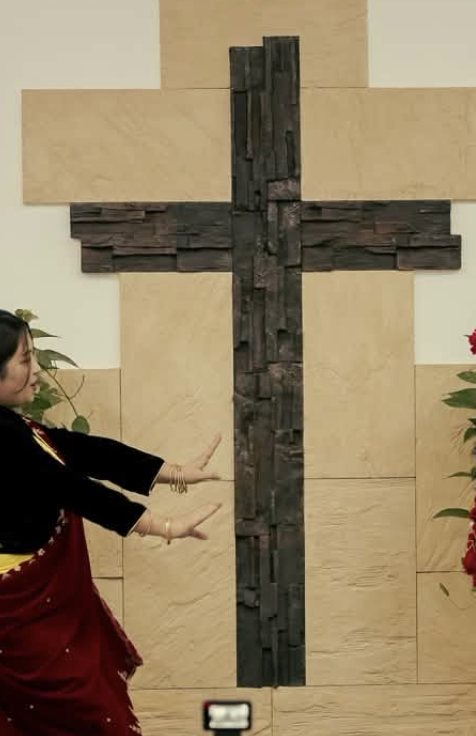
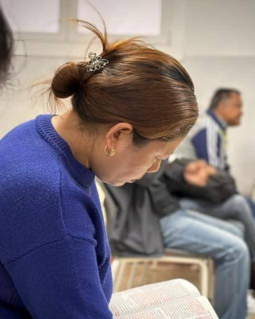
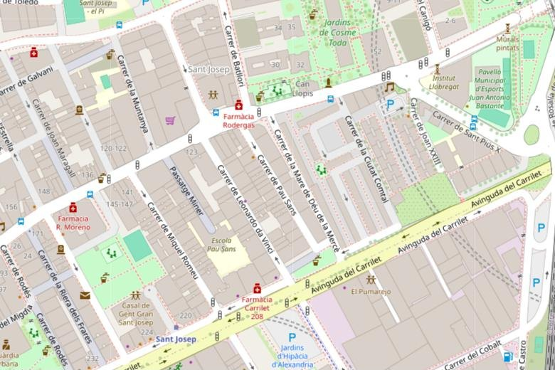

Cada domingo15:00
Culto dominical
Nos reunimos cada domingo a las 15:00 en Carrer de Pau Sans, 22. Llega unos minutos antes y te recibiremos en la puerta.
Planifica tu visitaUna familia nepalí en Barcelona que adora al Dios vivo. Ven tal como eres: cada domingo a las 15:00 te esperamos en L'Hospitalet.
Creemos en un solo Dios verdadero, que existe eternamente en tres personas distintas:
Creador del cielo y de la tierra, fuente de toda vida y de todo amor.
Nuestro Señor y Salvador, que murió por nuestros pecados, resucitó y nos da vida eterna.
Nuestro Ayudador, Consolador y Guía, que vive en nosotros y nos da poder para caminar en la verdad de Dios.
Creemos que el Padre, el Hijo y el Espíritu Santo son igualmente Dios, unidos en naturaleza divina, gloria y poder.
Un solo Dios. Tres personas. Una verdad eterna.
Nuestra fe está edificada sobre la Palabra de Dios, y nuestra salvación se encuentra solo en Jesucristo.
Pastor de Nepali Church Barcelona · JPM Barcelona
Cada domingo nos guía en la Palabra de Dios y en la oración. Si es tu primera vez, acércate a saludarle después del culto: estará encantado de conocerte.
Traemos nuestra fe, nuestra lengua y nuestra cultura de Nepal a Barcelona, y abrimos las puertas a todas las personas que viven en esta ciudad.
Alabanza, oración y la Palabra de Dios. En persona en L'Hospitalet o desde casa por Facebook.
Nos reunimos cada domingo a las 15:00 en Carrer de Pau Sans, 22. Llega unos minutos antes y te recibiremos en la puerta.
Planifica tu visita¿No puedes venir? Sigue las transmisiones en directo y vuelve a ver los mensajes en nuestra página de Facebook.
Ver el último vídeo
Celebramos la fe con música y danza tradicional nepalí. Nuestra cultura también es una forma de dar gracias a Dios.
Ver fotos
«Porque de tal manera amó Dios al mundo…» (Juan 3:16). Si quieres saber más, hablemos sin compromiso.
Hablar con nosotrosCuéntanos por qué necesitas que oremos. Te acompañamos en lo que estés viviendo.
Enviar peticiónPorque de tal manera amó Dios al mundo, que ha dado a su Hijo unigénito, para que todo aquel que en él cree, no se pierda, mas tenga vida eterna.Juan 3:16
Venid a mí todos los que estáis trabajados y cargados, que yo os haré descansar.Mateo 11:28
Jehová es mi pastor; nada me faltará.Salmo 23:1
La casa de Dios, que es la iglesia del Dios vivo, columna y apoyo de la verdad.1 Timoteo 3:15
Más fotos y vídeos de cada domingo en nuestro Instagram y Facebook.
Mira nuestros vídeos de alabanza en Facebook e Instagram.

© OpenStreetMapEl mapa interactivo es de Google Maps y solo se carga si lo pulsas.
Sí. Todas las personas son bienvenidas, conozcan o no la fe cristiana. No hace falta inscribirse.
Incluye alabanza, oración y predicación de la Biblia. Te recomendamos llegar 10 minutos antes para saludarnos.
Sí. Publicamos directos y vídeos en nuestra página de Facebook, Nepali Church Barcelona.
Llámanos o escríbenos por WhatsApp al +34 624 492 174, envíanos un email a jpmspain.barcelona@gmail.com o un mensaje en Instagram o Facebook.